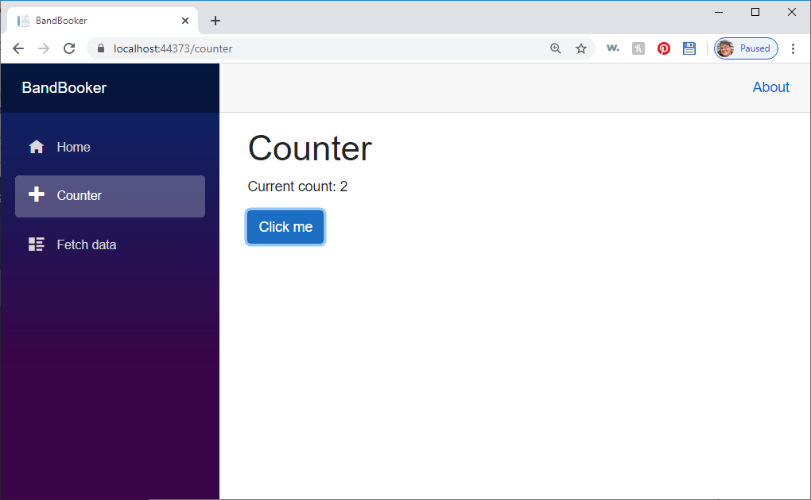
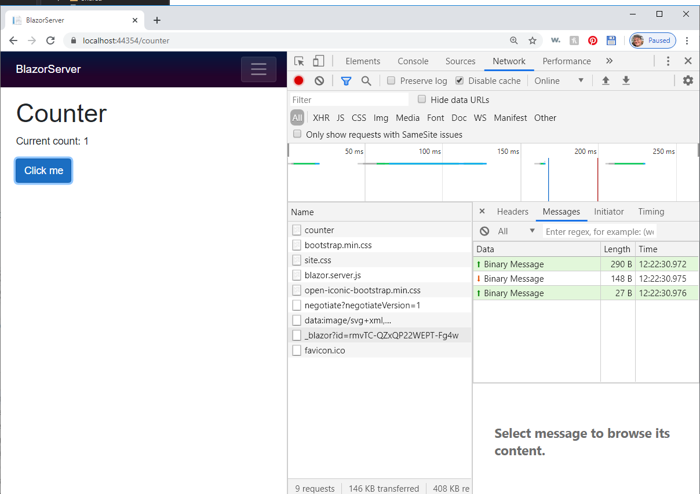

Carl Franklin's Blazor Desk Show
by Carl Franklin
This content was originally developed for Carl Franklin's one-day online Blazor workshop.
You might also catch Carl in your neck of the woods on the Blazor Desk Show.
Install the latest Preview of Blazor WebAssembly
Follow the instructions in this blog post:
https://devblogs.microsoft.com/aspnet/blazor-webassembly-3-2-0-preview-3-release-now-available/
The steps are:
- Install the latest .NET Core 3.1 SDK
- Install the latest preview of Visual Studio 2019
- Run the following command to install the updated WebAssembly Template:
dotnet new -i Microsoft.AspNetCore.Components.WebAssembly.Templates::3.2.0-preview3.20168.3
Let's Build a Blazor Server App
Create a new Blazor Server App called BlazorServer
Run the application by pressing F5
You've no doubt seen this before if you've at all played with Blazor apps. It's a sample app that shows you how to interact with code and use a service to fetch data, even if that data is locally generated.
Click on the Counter menu option and press the button to increase the counter.

Note: if the counter doesn't work, you might be running in Internet Explorer 11 or some other older browser. Try the latest version of Chrome.
Here's another tip. If at any time Visual Studio hangs when you try and open a .razor page, close the page and rebuild. You should then be able to open it.
Now stop the app and open Pages/Counter.razor:
x "/counter"<h1>Counter</h1><p>Current count: </p><button class="btn btn-primary" ="IncrementCount">Click me</button> { int currentCount = 0; void IncrementCount() { currentCount++; }}There are two sections here, the Razor markup and the code block as specified by @code {}
In the button tag, check out how the click handler is wired up, by using @onclick instead of onclick without an @ sign.
You can think of the IncrementCount() method as running in the browser, but it's actually running on the server. If this was a WebAssembly project (client-side Blazor), it would actually run in the browser.
Server-side Blazor ships UI changes down to the browser using a hidden SignalR hub. When the button is clicked, the browser sends a request via SignalR, the code executes on the server, and any UI changes are sent back to the browser.
Blazor Server Hosting Model
The following information comes right from the Blazor docs at the following URL:
https://docs.microsoft.com/en-us/aspnet/core/blazor/hosting-models?view=aspnetcore-3.0#blazor-server
With the Blazor Server hosting model, the app is executed on the server from within an ASP.NET Core app. UI updates, event handling, and JavaScript calls are handled over a SignalR connection.

To create a Blazor app using the Blazor Server hosting model, use the ASP.NET Core Blazor Server App template (dotnet new blazorserver). The ASP.NET Core app hosts the Blazor Server app and creates the SignalR endpoint where clients connect.
The ASP.NET Core app references the app's Startup class to add:
- Server-side services.
- The app to the request handling pipeline.
The blazor.server.js script† establishes the client connection. It's the app's responsibility to persist and restore app state as required (for example, in the event of a lost network connection).
Comparison to server-rendered UI
One way to understand Blazor Server apps is to understand how it differs from traditional models for rendering UI in ASP.NET Core apps using Razor views or Razor Pages. Both models use the Razor language to describe HTML content, but they significantly differ in how markup is rendered.
When a Razor Page or view is rendered, every line of Razor code emits HTML in text form. After rendering, the server disposes of the page or view instance, including any state that was produced. When another request for the page occurs, for instance when server validation fails and the validation summary is displayed:
- The entire page is rerendered to HTML text again.
- The page is sent to the client.
A Blazor app is composed of reusable elements of UI called components. A component contains C# code, markup, and other components. When a component is rendered, Blazor produces a graph of the included components similar to an HTML or XML Document Object Model (DOM). This graph includes component state held in properties and fields. Blazor evaluates the component graph to produce a binary representation of the markup. The binary format can be:
- Turned into HTML text (during prerendering).
- Used to efficiently update the markup during regular rendering.
A UI update in Blazor is triggered by:
- User interaction, such as selecting a button.
- App triggers, such as a timer.
The graph is rerendered, and a UI diff (difference) is calculated. This diff is the smallest set of DOM edits required to update the UI on the client. The diff is sent to the client in a binary format and applied by the browser.
A component is disposed after the user navigates away from it on the client. While a user is interacting with a component, the component's state (services, resources) must be held in the server's memory. Because the state of many components might be maintained by the server concurrently, memory exhaustion is a concern that must be addressed. For guidance on how to author a Blazor Server app to ensure the best use of server memory, see Secure ASP.NET Core Blazor Server apps.
(end of content from Blazor documentation)
Watch Network Traffic to get the Real Story
After running, press F12 to bring up the browser tools, and go to the Networks Tab. Turn on Network Logging, then refresh.
Notice that not much data is sent to the client.
To see the SignalR traffic, open the item that starts with _blazor?id then click on the Counter page and start clicking the button. This screen shot below shows one heartbeat message followed by the traffic for one click of the Counter button.

Scaling Blazor Server
As of this writing, every connected client requires about 85K of overhead on the server, and that's before any of your own state. Here's a screen from Dan Roth's video at .NET Conf in January, 2020
Memory
To conserve memory usage, pay attention to how much memory is being used by your app in the form of data being stored in memory. For example, don't allow your users to load hundreds of thousands of records into memory all at once.
WebSockets
In addition to memory, available web sockets can also be depleted if the number of concurrent clients exceeds the number of available SignalR connections (web sockets). To scale this, you might consider using Azure SignalR Service, completely offloading the SignalR service. Here's a link to an article that explains how to make that happen:
https://github.com/aspnet/AzureSignalR-samples/tree/master/samples/ServerSideBlazor
Sever Side Blazor Benefits
- Download size is significantly smaller than a Blazor WebAssembly app, and the app loads much faster.
- The app takes full advantage of server capabilities, including use of any .NET Core compatible APIs.
- Thin clients are supported. For example, Blazor Server apps work with browsers that don't support WebAssembly (such as Internet Explorer) and on resource-constrained devices.
- The app's .NET/C# code base, including the app's component code, isn't served to clients.
Server Side Blazor Downsides
- Higher latency usually exists. Every user interaction involves a network hop.
- There's no offline support. If the client connection fails, the app stops working.
- Scalability is challenging for apps with many users. The server must manage multiple client connections and handle client state.
- An ASP.NET Core server is required to serve the app. Serverless deployment scenarios aren't possible (for example, serving the app from a CDN).
†The blazor.server.js script is served from an embedded resource in the ASP.NET Core shared framework.
Blazor Client (Web Assembly) Hosting Model

Add a Blazor Client Project to the Solution
Right-click on the solution, select "Add" and then "Add Project", and then select "Blazor App".
Name the project BlazorWasm
Select Blazor WebAssembly App and make sure you select ASP.NET Core hosted
That option gives us an ASP.NET Core server app to host the WebAsseembly app. It's a place where we can add API controllers. We also get a shared .NET Standard assembly project where we can put shared data, such as models.
Set the BlazorWasm.Server project as the Startup Project by right-clicking on it and selecting "Set as Startup Project" from the context menu. Press F5 to run the app.
Watching Network Traffic
Open the app in Incognito mode and press F12 to open the browser tools, then go to the Network Tab. Disable the cache and press the Record Button, then refresh the browser with Ctrl-F5
Check it out! Look at all those DLLs shipping down to the browser. 6 MB was transferred. The reason it's so high (the previous version only shipped down 2.1 MB) is that Microsoft has disabled the linker for Debug model To turn on the linker, simply switch to release mode, and you'll see only 1.9 MB is transferred:
All the code is going to run in the Browser. If you go to the Counter page and start clicking you won't see any network traffic.
Features of Blazor WebAssembly 3.2.0 Preview 3
This version was released on March 26th, 2020.
- Debugging in Visual Studio and Visual Studio Code
- Auto-rebuild in Visual Studio
- Configuration
- New HttpClient extension methods for JSON handling
Details of the new features can be seen here.
Client Side Blazor Benefits
- Code executes more quickly in the browser. Lower latency.
- Offline support. PWA + Wasm is a beautiful thing.
- Can be distributed via CDN
- Any .NET Standard 2.0 C# will run in the browser!
Client Side Blazor Downsides
Blazor Client can't directly access your database
I mean, I guess nothing's stopping you from hard-coding your database connection string in the client and letting them have at it. It's just not a good idea. The idea of allowing clients to have direct access to a database went out in the 90s. The best idea is to call into an API (REST, gRPC, etc.) from the client. Conversely, Blazor Server could access your database directly because the code is already on the server.
WebAssembly is not supported in abandoned but still used browsers such as Internet Explorer.
Handling State in Blazor Server
If you're going to consider using Blazor Server in a cluster, you must move state outside of any one server. The first step is to move state out of the individual pages. By default, page-level (module-level) variables are zapped when the page is initialized, which occurs on navigation.
For a detailed look at how to use Local Storage to store state, check out my blog post, Blazor Shopping Cart Sample using Local Storage to Persist State.
Let's see how we can move state out of the page:
Set BlazorServer app (Server-Side) as the default project and Press F5
As an experiment, click the counter button a few times and watch the counter go up. Now, navigate to another page such as the Home page and back again to the Counter page. Notice that your clicks count has gone back to zero. This is because state is based on navigation. When you navigate to a page, it's state is reinitialized.
But there is a way to move state out of the page to the application level by using a service. We're going to add a class to the BlazorWasm.Shared project, so we can access it from both the BlazorServer and BlazorWasm.Client projects
Add a new class called AppState.cs to the BlazorWasm.Shared project with the following code:
xxxxxxxxxxusing System;using System.Collections.Generic;using System.Text;namespace BlazorWasm.Shared{ public class AppState { public int Clicks { get; set; } }}Add a Project Refrence from the BlazorServer project to the BlazorWasm.Shared project:
Add the following lines to the _Imports.razor files in both the BlazorServer and BlazorWasm.Client projects:
xxxxxxxxxx BlazorWasm.SharedNow, we need to add this class to both projects, but the way we do that is a bit different.
In the BlazorServer project, add the following line to ConfigureServices in startup.cs:
xxxxxxxxxxservices.AddScoped<AppState>();You'll need this:
xxxxxxxxxxusing BlazorWasm.Shared;
In the BlazorWasm.Client project, add this line to the Program.cs file
xxxxxxxxxxbuilder.Services.AddScoped<AppState>();Add it right above this line:
xxxxxxxxxxawait builder.Build().RunAsync();Again, you'll need this:
xxxxxxxxxxusing BlazorWasm.Shared;Now, in both projects, change counter.razor to inject the AppState and use the Count property instead of the default currentCount variable:
xxxxxxxxxx "/counter" AppState appState;<h1>Counter</h1><p>Current count: .Clicks</p><button class="btn btn-primary" ="IncrementCount">Click me</button> { private void IncrementCount() { appState.Clicks++; }}Before we can run this, we have to deal with an ambiguous reference in BlazorServer's FetchData.razor page. Fully qualify the WeatherForecast reference as being in the local project.
xxxxxxxxxxprivate BlazorServer.Data.WeatherForecast[] forecasts;Now, try running the app. Go to the Counter page and increment it. Select another page (Home or FetchData) and then back to the Counter page. Notice the counter does not reset to zero.
Try running the other project to ensure that both BlazorServer and BlazorWasm.Client can both access the AppState class.
Types of Services
AppState is added as a Scoped service, which means every client gets their own copy.
Singleton services share one instance for all clients - such as the WeatherForecast service.
Transient services are created at the page level, the same as page-level variables.
Unhandled Exceptions in Blazor Server
Let's watch what happens in the case of an unhandled exception in the BlazorServer app.
Ensure that BlazorServer is the Startup project.
Change the code in Counter.razor to throw an exception:
xxxxxxxxxxvoid IncrementCount(){ throw new Exception("Ouch!");}When you run the app and click the button on the Counter page , Visual Studio breaks on the exception. Press F5 to continue. You will see a notification at the bottom of the page that an unhandled exception has occurred. What's more, the app has stopped responding. It's completely dead. You can press F12 to see the exception details:
Notice the last item logged in the console:
xxxxxxxxxxInformation: Connection disconnected.
Blazor has completely severed the SignalR connection. This is by design. Your code is in an unsafe state. If Blazor allowed your app to continue it could become an attack vector. Think about an unhandled exception placing and order. Not good. So the moral of the story is to execute server side code in try/catch blocks and fail gracefully.
Binding
If you have used any other SPA frameworks for the web such as Angular or React, or you have done any .NET UI programing in the last 10 years, you probably know what binding is. Binding is a way that you can display data (one-way) or receive data such as form data (two-way) without requiring code to update the UI when the values change.
Blazor offers a simple binding model for both one-way and two-way binding that I think you will find easy to understand and use.
One-Way Binding
One-Way Binding is for displaying data only, such as a label. It can also be used for any value required by UI elements to display data. What makes it one-way binding is that the user can not change or set the values. The Counter page is a perfect example of one-way binding. We have a value that we are displaying on the page using the Razor syntax like so:
xxxxxxxxxx<p>Current count: @appState.Clicks</p>
The @ sign tells Blazor that this is a value to display.
Two-Way Binding
Two-Way Binding is achieved through the @bind syntax, which you can use with DOM elements that allow input.
Let's replace the contents of our Index.razor file with the following:
xxxxxxxxxx@page "/"<h1>@Message</h1><br /><input @bind="Message" style="width:50%;"/><br/>@code{private string Message { get; set; } = "Two-way bound message";}
We have a private string property (Message), to which we have bound an input tag using the syntax @bind="Message". The input tag is smart enough to know that we want to bind the Value property, but we could also specify the exact property to bind with the following syntax:
xxxxxxxxxx@bind-Value="Message"
In fact, you can bind to any property just by specifying it with a dash after the word bind.
Run the app and you should see this:
Go ahead and change the message, then press Tab to force a loss of focus. The onchange event occurs in the DOM, and the label updates.
Event Binding
By default, the value is updated after the onchange event has occurred, but you can change that. Modify the input tag as follows:
xxxxxxxxxx<input @bind="Message" @bind:event="oninput" style="width:50%;"/>
@bind:event="oninput" means we want to update the value on every keystroke. Run the app again and just start typing. The label changes on every key stroke.
Two-Way Binding to a Child Component
Add a new Blazor Component to the project called ChildComponent.razor
Right click on the BlazorServer project's Pages folder, select "Add", then select "Razor Component" from the context menu:
Change the content to this:
xxxxxxxxxx<div style="padding:1vw;background-color:lightgray;"> <h2>Parent Message: </h2> <button ="UpdateMessage">Change Message</button></div> { [Parameter] public string ParentMessage { get; set; } [Parameter] public EventCallback<string> MessageChanged { get; set; } private async Task UpdateMessage() { ParentMessage = "Blaze On"; await MessageChanged.InvokeAsync(ParentMessage); }}Now, change your Index.razor file to the following:
xxxxxxxxxx "/"<h1></h1> <br /><input ="Message" :event="oninput" style="width:50%;"/><br/><br/><ChildComponent -ParentMessage="Message" -ParentMessage:event="MessageChanged" />{ private string Message { get; set; } = "Two-way bound message";}The Parent (Index.razor) is binding its Message property to the ChildComponent's ParentMessage property. Now, it will change as Message changes.
This component also shows how to update the Parent's Message property from within. It raises an event (MessageChanged). In the parent, we don't need to create an event handler for it, although we could do that - and just call StateHasChanged() within the event handler to make it work. However, notice that we can bind the ParentMessage property to update on the MessageChanged event just as we changed the binding of Message to update on each keystroke (oninput).
Develop Blazor Client and Blazor Server App Simultaneously
Wouldn't it be great if you could write one version of your app that can run as either a WebAssembly or Server-based Blazor app? With a few tweaks, and by following a few design guidelines, you can.
I first learned of this pattern at NDC London 2020 in Steve Sanderson's Blazor talk. The secret sauce is to add a reference from a Server-Side Blazor app to a Client-Side Blazor app, and then register the App component in the Server as a reference to the Client-side App component.
We are going to develop our app as a Blazor WebAssembly App, but we're going to run it and debug it using the Blazor Server app. Confused? All will make sense once we set this up.
The details are outlined in my blog post: Reuse Blazor WASM UI and Code in Blazor Server.
Add a Reference from Server to Client
Right-click on the BlazorServer proejct, and add a project reference to the BlazorWasm.Client project. You should already have a project reference to the BlazorWasm.Shared project. Let's keep that as well.
Change the Server App component to reference the Client App component
In the BlazorServer project, open the _Hosts.cshtml from the Pages folder, locate the <app> tag, and change the component definition from this:
xxxxxxxxxx<component type="typeof(App)" render-mode="ServerPrerendered" />
to this
xxxxxxxxxx<component type="typeof(BlazorWasm.Client.App)" render-mode="Server" />
That's the secret sauce. The App class contains all the UI and code, which happens to run on the server just as easily as the client, with a few tweaks that should become obvious.
Set Multiple Startup Projects
In order to test this, we have to run the WASM server, which loads the Web Assembly client, and the BandBooker Server-side project as well.
Right-click on the Solution at the top of the Solution Explorer, and Select Properties. Under Common Properties -> Startup Project select "Multiple Startup Projects", then set the Action for BlazorServer and BlazorWasm.Server to "Start", then select OK.
Rebuild the Solution and Run
You will see two browsers (or two tabs): "BlazorWasm" with code running in the browser, and "BlazorServer" with that same code running on the server.
There is one snag, however. The Fetch Data page. Notice that it works just fine in the client app, but on the server app, it throws an unhandled exception:
Here's the big clue as to what happened:
xxxxxxxxxxCannot provide a value for property 'Http' on type 'BandBookerWasm.Client.Pages.FetchData'. There is no registered service of type 'System.Net.Http.HttpClient'
This Exception illustrates how you will need to design your app from now on. The HttpClient class is available in the BlazorWasm.Client project by default, but not in the BlazorServer project.
Here's the rule:
In order to achieve reusability between these two projects, they must each have references to the same external resources: projects, packages, scripts, etc.
So, we have to add a scoped HttpClient service to the BlazorServer project. Open the startup.cs file and add the following to the ConfigureServices method:
xxxxxxxxxxservices.AddScoped<System.Net.Http.HttpClient>();
We're not done yet. Take a look at the FetchData.razor file in BandBookerWasm.Client. It's trying to access an API controller that's in the same url scope. In order for this to work in both client and server, we have to be more explicit.
xxxxxxxxxx { private WeatherForecast[] forecasts; protected override async Task OnInitializedAsync() { forecasts = await Http.GetJsonAsync<WeatherForecast[]>("WeatherForecast"); }}In the BlazorWasm.Server project, expand Properties, and then click on launchSettings.json. Copy the SSL port. We're going to need that.
Change the Controller Url in FetchData.Razor
In the BlazorWasm.Client project, open FetchData.razor under the Pages folder, and change the URL from "WeatherForecast" to "https://localhost:[SSL PORT]/weatherforecast" replacing "[SSL PORT]" with the SSL port from launchSerttings.json:
xxxxxxxxxx { private WeatherForecast[] forecasts; protected override async Task OnInitializedAsync() { string url = "https://localhost:44331/weatherforecast"; forecasts = await Http.GetJsonAsync<WeatherForecast[]>(url); }}Now both the client and the server app have access to the same resources, and by being explicit with the urls, they can both connect to the same API controllers.
Step1: Building the BandBooker App
The completed code after this step can be found in the BandBooker_01_BeforeModels folder.
Close the solution and create a new Blazor Server project called BandBooker. Add to the solution a Blazor WebAssembly project called BlazorWasm the same way we did with the first solution. Make sure you select "ASP.NET Core hosted" when adding the WebAssembly app.
Add project references from BandBooker to BandBookerWasm.Client and BandBookerWasm.Shared
Change the _Host.cshtml file to refer to BandBookerWasm.Client.App and change the render-mode to "Server".
Open the solution properties and select BandBooker and BandBookerWasm.Server as the startup projects.
Rebuild and Press F5 to test.
All of the code and UI we develop from now on will be in the BandBookerWasm.Client app, even though it's running on the server.
We are going to turn this app into an app to manage musicians and the instruments they play. This functionality is part of a larger project (BandBooker) that I create in my online workshop, which you can read about at http://blazor.appvnext.com
This app will have two sections, one for managing instruments, and one for managing the musicians that play those instruments.
Step 2 - Add Models
The completed code after this step can be found in the BandBooker_02_BeforeAuth folder.
I lied. I said we were only going to write code in the BandBookerWasm.Client app. We need to create models that can be shared across all projects. Therefore, we will add them to the BandBookerWasm.Shared project.
Create a folder in BandBookerWasm.Shared named Models and add the following classes to it:
Instrument.cs
xxxxxxxxxxpublic class Instrument{public int Id { get; set; }public string Name { get; set; }}
Musician.cs
xxxxxxxxxxpublic class Musician{public int Id { get; set; }public string Name { get; set; }public List<Instrument> Instruments { get; set; } = new List<Instrument>();}
UI for Managing Instruments
In this section we will build the UI for adding, editing, and deleting instruments.
Showing a list of Instruments
We will start by showing a list of instruments.
Open Index.razor from the Pages folder in the BandBookerWasm.Client project and replace the contents with this:
xxxxxxxxxx "/"<h2>Instruments</h2><select size="10" style="width:100%;"> (var instrument in Instruments) { <option value="@instrument.Id.ToString()">.Name</option> }</select> { List<Instrument> Instruments = new List<Instrument>(); protected override void OnInitialized() { // Create Instruments Instruments = new List<Instrument>(); Instrument instrument; instrument = new Instrument { Id = 1, Name = "Guitar" }; Instruments.Add(instrument); instrument = new Instrument { Id = 2, Name = "Keyboards" }; Instruments.Add(instrument); instrument = new Instrument { Id = 3, Name = "Bass" }; Instruments.Add(instrument); instrument = new Instrument { Id = 4, Name = "Drums" }; Instruments.Add(instrument); }}Add this statement to your _Imports.razor file:
xxxxxxxxxx@using BandBookerWasm.Shared.Models
Make sure you save the file. Now all the code in your components will know where the models are.
The protected override void OnInitialized() method is called when the page loads after initialization. This is a good place to create our instruments. In the real world, this is where you'd call a service to go fetch your initial data, if you have any.
Check out how we have a loop inside the <select> tag that creates <option> tags for each instrument. Each option can reference the @musician object to display the name and hold the Id as the value.
There's not much going on here yet, so let's add a few buttons and handlers.
In Index.razor, add three buttons just below the <select> tag:
xxxxxxxxxx<button @onclick="NewInstrumentButtonClick">New</button> <button @onclick="EditInstrumentButtonClick">Edit</button> <button @onclick="DeleteInstrumentButtonClick">Delete</button>Now we will add three empty event handlers for these buttons in the @code block:
xxxxxxxxxx void NewInstrumentButtonClick() { } void EditInstrumentButtonClick() { } void DeleteInstrumentButtonClick() { }Press F5 and you should see something like this:
These buttons don't do anything yet, but take a look at the state of the UI. There is no instrument selected, and yet the Edit and Delete buttons are enabled. That makes no sense. They should be disabled by default until (and always unless) an instrument is selected. To manage that we need a boolean. Add the following to the @code block:
xxxxxxxxxxbool DisableInstrumentEditButton = true;Now modify the Edit and Delete buttons so they can be disabled using this boolean:
xxxxxxxxxx<button disabled="@DisableInstrumentEditButton" @onclick="EditInstrumentButtonClick">Edit</button> <button disabled="@DisableInstrumentEditButton" @onclick="DeleteInstrumentButtonClick">Delete</button>Press F5 and you should see something like this:
Great! Now, we can't edit and delete because no instrument is selected. Let's wire up the handler for when an instrument is selected.
First, let's add the following to the @code block:
xxxxxxxxxx Instrument SelectedInstrument; void InstrumentSelected(ChangeEventArgs args) { string instrumentId = args.Value.ToString(); SelectedInstrument = (from x in Instruments where x.Id.ToString() == instrumentId.ToString() select x).First(); if (SelectedInstrument != null) DisableInstrumentEditButton = false; else DisableInstrumentEditButton = true; }Now, modify the <select> tag to call InstrumentSelected:
xxxxxxxxxx<select @onchange="InstrumentSelected" size="10" style="width:100%;"> @foreach (var instrument in Instruments) { <option value="@instrument.Id.ToString()">@instrument.Name</option> }</select>Press F5 and select an instrument. The Edit and Delete buttons should enable.
Code Behind
One thing you will notice is that some of the standard features of Visual Studio don't work when you're editing code in a @code block in the razor page itself. For example, if you hit Ctrl-. on a variable name that you've changed, you expect the refactoring list to pop up.
To get the complete experience of editing code in Visual Studio, you probably want to put the code into a class, or a "code behind" class.
Let's do that. Right-click on the Pages folder, and add a new class called Index.razor.cs
One thing you'll notice is that it automatically lands under the Index.razor file in the Solution Explorer. Visual Studio is smart enough to know that's where it goes.
Replace the code in Index.razor.cs with the following:
xxxxxxxxxxusing System;using System.Collections.Generic;using System.Linq;using System.Threading.Tasks;using BandBookerWasm.Shared.Models;using Microsoft.AspNetCore.Components;namespace BandBookerWasm.Client.Pages{ public partial class Index : ComponentBase { protected Instrument SelectedInstrument; protected void InstrumentSelected(ChangeEventArgs args) { string instrumentId = args.Value.ToString(); SelectedInstrument = (from x in Instruments where x.Id.ToString() == instrumentId.ToString() select x).First(); if (SelectedInstrument != null) DisableInstrumentEditButton = false; else DisableInstrumentEditButton = true; } public bool DisableInstrumentEditButton = true; protected void NewInstrumentButtonClick() { } protected void EditInstrumentButtonClick() { } protected void DeleteInstrumentButtonClick() { } protected List<Instrument> Instruments = new List<Instrument>(); protected override void OnInitialized() { // Create Instruments Instruments = new List<Instrument>(); Instrument instrument; instrument = new Instrument { Id = 1, Name = "Guitar" }; Instruments.Add(instrument); instrument = new Instrument { Id = 2, Name = "Keyboards" }; Instruments.Add(instrument); instrument = new Instrument { Id = 3, Name = "Bass" }; Instruments.Add(instrument); instrument = new Instrument { Id = 4, Name = "Drums" }; Instruments.Add(instrument); } }}Note that we had to make all the members protected otherwise the markup wouldn't be able to access them .
Now, back in Index.razor, we can remove the @code block.
Let's make one more change before we move on, and that is to show the SelectedInstrument as selected in the list. Change the <select> tag to this:
xxxxxxxxxx<select @onchange="InstrumentSelected" size="10" style="width:100%;"> @foreach (var instrument in Instruments) { @if (SelectedInstrument != null && instrument.Id == SelectedInstrument.Id) { <option selected value="@instrument.Id.ToString()"> @instrument.Name </option> } else { <option value="@instrument.Id.ToString()">@instrument.Name</option> } }</select>This will be important for the next step, which is to fill in the rest of the code and UI to edit, add, and delete instruments.
Delete Code:
We're going to start with the code to delete an instrument in Index.razor.cs:
xxxxxxxxxx public void DeleteInstrumentButtonClick() { if (SelectedInstrument != null) { Instruments.Remove(SelectedInstrument); if (Instruments.Count > 0) { SelectedInstrument = Instruments.First(); } } }That should be easy to understand. Go ahead and try it.
Component to Add and Edit
To add or edit an instrument we're going to create a component.
Add a new Razor Component to your Shared folder in BandBookerWasm.Client called InstrumentEditor.razor
Replace the entire contents of the file with this:
xxxxxxxxxx Microsoft.AspNetCore.Components.Web; BandBookerWasm.Shared.Models; ( == true){ <div style="background-color:lightgray;"> <div style="padding:1vw;"> <EditForm Model="@editInstrument" OnValidSubmit="@SubmitButtonPressed"> <DataAnnotationsValidator /> <ValidationSummary /> Name: <InputText -Value="@editInstrument.Name" type="text" style="width:100%;" /> <br /><br /> <button type="submit"></button> <span> </span> <button type="button" ="CancelButtonPressed">Cancel</button> </EditForm> </div> </div>} { [Parameter] public EventCallback<string> CancelPressed { get; set; } [Parameter] public EventCallback<Instrument> InstrumentAdded { get; set; } [Parameter] public EventCallback<string> InstrumentUpdated { get; set; } [Parameter] public Instrument Instrument { get; set; } private Instrument editInstrument = new Instrument(); bool ShowInstrumentPanel = false; string SubmitButtonText = ""; bool Adding = false; public void Hide() { ShowInstrumentPanel = false; } public void NewInstrument() { Adding = true; SubmitButtonText = "Add"; editInstrument = new Instrument(); ShowInstrumentPanel = true; } public void EditInstrument() { Adding = false; SubmitButtonText = "Update"; editInstrument = new Instrument(); editInstrument.Name = Instrument.Name; ShowInstrumentPanel = true; } async Task SubmitButtonPressed() { if (Adding) { await InstrumentAdded.InvokeAsync(editInstrument); } else { Instrument.Name = editInstrument.Name; await InstrumentUpdated.InvokeAsync(""); } } async Task CancelButtonPressed() { ShowInstrumentPanel = false; await CancelPressed.InvokeAsync(""); }}Validation Controls
Blazor has built-in versions of DOM input objects that support validation. What's more, you can define the rules as property attributes in your classes.
Let's modify the Instrument Class so that the instrument name is a required field, and that it can be no longer than 50 characters:
xxxxxxxxxxusing System;using System.Collections.Generic;using System.Linq;using System.Threading.Tasks;using System.ComponentModel.DataAnnotations;namespace BandBookerWasm.Shared.Models{ public class Instrument { public int Id { get; set; } [Required] [StringLength(50, ErrorMessage = "Name is too long.")] public string Name { get; set; } }}In order for the Shared project to access System.ComponentModel.DataAnnotations, we have to add reference to System.ComponentModel.Annotations. Double-click on the BandBookerWasm.Shared project to edit the .csproj file, and add the following package:
xxxxxxxxxx<ItemGroup><PackageReference Include="System.ComponentModel.Annotations" Version="4.7.0" /></ItemGroup>
Now notice that the input controls in InstrumentEditor.razor are wrapped in an <EditForm> tag, and there are also two other tags present here: <DataAnnotationsValidator> and <ValidationSummary>. DataAnnotationsValidator applies validation, and the ValidationSummary displays any error messages from the validation.
The <InputText> tag is a validation-aware version of the DOM <input> tag.
Also note that the submit button has to be defined as type="submit" and all other buttons as type="button".
InstrumentEditor Code
Now, let's take a look at the code above.
The ShowInstrumentPanel boolean determines whether or not this component's UI is displayed.
What's cool about this component is the three parameters which define event handlers for InstrumentAdded, InstrumentUpdated, and CancelPressed.
We have a local Instrument variable that gets set by our code.
Check out the two public methods: NewInstrument() and EditInstrument().
NewInstrument() sets the Instrument to a new instance of Instrument, and also changes the text that get's shown in the Submit button to "Add". It also sets a boolean Adding to true. That's so we know which event to raise when the Submit button is pressed.
EditInstrument() accepts an Instrument argument, and sets the local Instrument variable to it. It also sets the Adding and SubmitButtonText variables.
When the users clicks the Submit button, the SubmitButtonPressed method is called, which raises either the InstrumentAdded or InstrumenUpdated event, which gets handled in the host (Index.razor).
The Hide() method simply hides the component. We'll need to call that in the host.
Consuming the InstrumentEditor Component
Go back to Index.razor and add the following markup:
xxxxxxxxxx<br /><span style="color:red;">@InstrumentErrorMessage</span><InstrumentEditor @ref="instrumentEditor" Instrument="SelectedInstrument" CancelPressed="InstrumentCancelled" InstrumentAdded="InstrumentAdded" InstrumentUpdated="InstrumentUpdated"></InstrumentEditor><br /><br />Notice @ref="instrumentEditor". That is how we can access the component directly with a local variable, in this case instrumentEditor.
We are passing four parameters, the SelectedInstrument, and three local event handlers. Inside the component code, we can raise those events, which will fire in the Index code.
Now we need to add some supporting code to our Index code behind. Remember, this is the page that hosts the component.
First you will need to add these two using statements:
xxxxxxxxxxusing BandBookerWasm.Client.Shared;using BandBookerWasm.Shared;Then add this code:
xxxxxxxxxxprotected InstrumentEditor instrumentEditor; protected string InstrumentErrorMessage = ""; protected bool DisableInstrumentList = false; protected void InstrumentCancelled(string message) { InstrumentErrorMessage = message; DisableInstrumentList = false; DisableInstrumentEditButton = (SelectedInstrument == null); } protected void InstrumentAdded(Instrument instrument) { Instruments.Add(instrument); SelectedInstrument = instrument; DisableInstrumentList = false; DisableInstrumentEditButton = false; instrumentEditor.Hide(); } protected void InstrumentUpdated(string message) { DisableInstrumentList = false; DisableInstrumentEditButton = false; instrumentEditor.Hide(); }We also need to fill in the button click handlers:
xxxxxxxxxx protected void NewInstrumentButtonClick() { InstrumentErrorMessage = ""; DisableInstrumentList = true; DisableInstrumentEditButton = true; SelectedInstrument = new Instrument(); instrumentEditor.NewInstrument(); } protected void EditInstrumentButtonClick() { DisableInstrumentList = true; DisableInstrumentEditButton = true; instrumentEditor.EditInstrument(); }Note that we also added a variable called DisableInstrumentList. We can use this to enable and disable the list of instruments while editing or adding. Change your <select> tag as follows:
xxxxxxxxxx<select @onchange="InstrumentSelected" disabled="@DisableInstrumentList" size="10" style="width:100%;"> @foreach (var instrument in Instruments) { @if (SelectedInstrument != null && instrument.Id == SelectedInstrument.Id) { <option selected value="@instrument.Id.ToString()"> @instrument.Name </option> } else { <option value="@instrument.Id.ToString()">@instrument.Name</option> } }</select>Stupid JavaScript Tricks: Set Focus
Wouldn't it be cool if we could automatically set focus to the name InputText when we show the InstrumentEditor component?
This one took me a long time to figure out. Assuming there is some kind of JavaScript function we can call from our code to set focus, we could call it from our NewInstrument() and EditInstrument() public methods. The problem is that until those methods complete, the InputText element doesn't exist. So, I had to do a little timeout voodoo.
Add the following JavaScript in both the BandBooker project - in the _Host.cshtml file under the Pages folder - and in the BandBookerWasm.Client project - in the index.html file in the wwwroot folder.
xxxxxxxxxx <script> window.SetFocus = (Id) => { setTimeout(internalFocus, 10, Id); }; function internalFocus(Id) { var element = document.getElementById(Id); if (element == null) { setTimeout(internalFocus, 10, Id); return; } element.focus(); element.select(); } </script>We will call the SetFocus() function using JavaScript Interop. It will wait 10 ms to call the internalFocus()function, which tries to get a reference to the element. If it can't, it simply calls itself again after another 10ms timeout. Once it has a reference, it sets the .focus() and .select() functions on that element. The danger here is that if you don't pass a valid Id, you will set this thing spinning out of control.
Now, we need a few mods to our InstrumentEditor.razor. Add this to the top of the page:
xxxxxxxxxx@inject IJSRuntime js;
Now, we have to give our InputText element an Id:
xxxxxxxxxx Name: <InputText id="instrument.name" @bind-Value="@editInstrument.Name" type="text" style="width:100%;" />Now, change the NewInstrument() and EditInstrument() methods to be async, and add the call to set focus:
xxxxxxxxxx public async Task NewInstrument() { Adding = true; SubmitButtonText = "Add"; editInstrument = new Instrument(); ShowInstrumentPanel = true; await js.InvokeVoidAsync("SetFocus", "instrument.name"); } public async Task EditInstrument() { Adding = false; SubmitButtonText = "Update"; editInstrument = new Instrument(); editInstrument.Name = Instrument.Name; ShowInstrumentPanel = true; await js.InvokeVoidAsync("SetFocus", "instrument.name"); }Finally, we have to change the button click handlers in Index.razor.cs to be async as well:
xxxxxxxxxx protected async Task NewInstrumentButtonClick() { InstrumentErrorMessage = ""; DisableInstrumentList = true; DisableInstrumentEditButton = true; SelectedInstrument = new Instrument(); await instrumentEditor.NewInstrument(); } protected async Task EditInstrumentButtonClick() { DisableInstrumentList = true; DisableInstrumentEditButton = true; await instrumentEditor.EditInstrument(); }Press F5. Test out the new focus feature by adding and/or editing an instrument.
Writing Generic Components
For the Musician Editor, we will create a reusable object picker component that will allow us to assign instruments to a musician. You've seen this UI pattern before, I'm sure:
This component is explained below, but also on my blog post: http://objectpicker.appvnext.com
Let's add two new files to the Shared folder in the BandBookerWasm.Client project: ObjectPicker.razor and MusicianEditor.razor
ObjectPicker.razor:
xxxxxxxxxx TItem<table style="width:100%"> <tr> <td style="width:45%;" valign="top"> All <br /> </td> <td style="width:10%;" valign="top"> <span> </span> </td> <td style="width:45%;" valign="top"> Selected <br /> </td> </tr> <tr> <td style="width:45%;" valign="top"> <select ="ItemDblClickedFromAllItems" ="ItemSelectedFromAllItems" size="10" style="width:100%;"> (var Item in AllItems) { if ((Item) == (SelectedItem)) { <option selected value="@ItemValue(Item)"> (Item) </option> } else { <option value="@ItemValue(Item)"> (Item) </option> } } </select> </td> <td style="width:10%;" valign="top"> <button ="AddSelectedItem" type="button" disabled="@AddSelectedItemButtonDisabled" style="width:100%;"> > </button><br /> <button ="@AddAllItems" type="button" style="width:100%;"> >> </button><br /> <button ="@RemoveSelectedItem" type="button" disabled="@RemoveSelectedItemButtonDisabled" style="width:100%;"> < </button><br /> <button ="@RemoveAllItems" type="button" style="width:100%;"> << </button><br /> </td> <td style="width:45%;" valign="top"> <select ="ItemDblClickedFromSelectedItems" ="ItemSelectedFromSelectedItems" size="10" style="width:100%;"> (var Item in SelectedItems) { if ((Item) == (SelectedItem)) { <option selected value="@ItemValue(Item)"> (Item) </option> } else { <option value="@ItemValue(Item)"> (Item) </option> } } </select> </td> </tr></table> { [Parameter] public string ItemType { get; set; } [Parameter] public string ItemTypePlural { get; set; } [Parameter] public string TextPropertyName { get; set; } [Parameter] public string ValuePropertyName { get; set; } [Parameter] public List<TItem> AllItems { get; set; } [Parameter] public List<TItem> SelectedItems { get; set; } TItem SelectedItem { get; set; } bool AddSelectedItemButtonDisabled = true; bool RemoveSelectedItemButtonDisabled = true; private string ItemValue(TItem Item) { return Item.GetType() .GetProperty(ValuePropertyName) .GetValue(Item, null) .ToString(); } private string ItemText(TItem Item) { return Item.GetType() .GetProperty(TextPropertyName) .GetValue(Item, null) .ToString(); } protected override void OnParametersSet() { if (AllItems.Count > 0) { // remove the items that exist in SelectedItems foreach (var item in SelectedItems) { var id = item.GetType() .GetProperty(ValuePropertyName) .GetValue(item, null) .ToString(); var ItemFromAllItems = (from x in AllItems where x.GetType() .GetProperty(ValuePropertyName) .GetValue(x, null) .ToString() == id select x).FirstOrDefault(); if (ItemFromAllItems != null) { AllItems.Remove(ItemFromAllItems); } } } if (AllItems.Count > 0) { SelectedItem = AllItems.First(); } else if (SelectedItems.Count > 0) { SelectedItem = SelectedItems.First(); } UpdateButtonEnabledStates(); } void ItemSelectedFromAllItems(ChangeEventArgs args) { SelectedItem = (from x in AllItems where x.GetType() .GetProperty(ValuePropertyName) .GetValue(x, null) .ToString() == args.Value.ToString() select x).FirstOrDefault(); UpdateButtonEnabledStates(); } void UpdateButtonEnabledStates() { AddSelectedItemButtonDisabled = !AllItems.Contains(SelectedItem); RemoveSelectedItemButtonDisabled = !SelectedItems.Contains(SelectedItem); } void AddAllItems() { foreach (var Item in AllItems.ToArray()) { SelectedItems.Add(Item); } if (SelectedItems.Count > 0) { SelectedItem = SelectedItems.First(); } AllItems.Clear(); UpdateButtonEnabledStates(); } void RemoveAllItems() { foreach (var Item in SelectedItems.ToArray()) { AllItems.Add(Item); } if (AllItems.Count > 0) { SelectedItem = AllItems.First(); } SelectedItems.Clear(); UpdateButtonEnabledStates(); } void AddSelectedItem() { if ((from x in SelectedItems where ItemValue(x) == ItemValue(SelectedItem) select x).FirstOrDefault() == null) { SelectedItems.Add(SelectedItem); AllItems.Remove(SelectedItem); UpdateButtonEnabledStates(); } } void RemoveSelectedItem() { if ((from x in AllItems where ItemValue(x) == ItemValue(SelectedItem) select x).FirstOrDefault() == null) { AllItems.Add(SelectedItem); SelectedItems.Remove(SelectedItem); UpdateButtonEnabledStates(); } } void ItemSelectedFromSelectedItems(ChangeEventArgs args) { SelectedItem = (from x in SelectedItems where x.GetType() .GetProperty(ValuePropertyName) .GetValue(x, null) .ToString() == args.Value.ToString() select x ).FirstOrDefault(); UpdateButtonEnabledStates(); } void ItemDblClickedFromAllItems() { AddSelectedItem(); } void ItemDblClickedFromSelectedItems() { RemoveSelectedItem(); }}MusicianEditor.razor:
xxxxxxxxxx BandBookerWasm.Shared; BandBookerWasm.Shared.Models; IJSRuntime js; ( != null && == true){ <div style="background-color:lightgray;"> <div style="padding:1vw;"> Name:<br /> <input id="musician.name" ="Musician.Name" /> <br /> <ObjectPicker AllItems="AllInstruments" SelectedItems="Musician.Instruments" ItemType="Instrument" ItemTypePlural="Instruments" TextPropertyName="Name" ValuePropertyName="Id"> </ObjectPicker> <br /> <button type="button" ="SubmitButtonPressed"></button> <span> </span> <button type="button" ="CancelButtonPressed">Cancel</button> </div> </div>} { Musician Musician = new Musician(); bool ShowMusicianPanel = false; bool Adding = false; string SubmitButtonText = "Update"; [Parameter] public List<Instrument> AllInstruments { get; set; } [Parameter] public EventCallback<string> CancelPressed { get; set; } [Parameter] public EventCallback<Musician> MusicianAdded { get; set; } [Parameter] public EventCallback<Musician> MusicianUpdated { get; set; } protected override async Task OnAfterRenderAsync(bool firstRender) { await js.InvokeVoidAsync("SetFocus", "musician.name"); await base.OnAfterRenderAsync(firstRender); } public void NewMusician(List<Instrument> Instruments) { this.Musician = new Musician(); AllInstruments = Instruments; Adding = true; SubmitButtonText = "Add"; ShowMusicianPanel = true; } public void EditMusician(List<Instrument> Instruments, Musician Musician) { AllInstruments = Instruments; Adding = false; SubmitButtonText = "Update"; this.Musician = Musician; ShowMusicianPanel = true; } async Task CancelButtonPressed() { ShowMusicianPanel = false; await CancelPressed.InvokeAsync(""); } async Task SubmitButtonPressed() { ShowMusicianPanel = false; if (Adding) { await MusicianAdded.InvokeAsync(this.Musician); } else { await MusicianUpdated.InvokeAsync(this.Musician); } }}Now, let's create a few musicians in the Index code behind:
xxxxxxxxxx protected List<Musician> Musicians = new List<Musician>(); protected override void OnInitialized() { // Create Instruments Instruments = new List<Instrument>(); Instrument instrument; instrument = new Instrument { Id = 1, Name = "Guitar" }; Instruments.Add(instrument); instrument = new Instrument { Id = 2, Name = "Keyboards" }; Instruments.Add(instrument); instrument = new Instrument { Id = 3, Name = "Bass" }; Instruments.Add(instrument); instrument = new Instrument { Id = 4, Name = "Drums" }; Instruments.Add(instrument); // Musicians Musicians = new List<Musician>(); Musician musician; musician = new Musician { Id = 1, Name = "Piano Patty" }; Musicians.Add(musician); musician = new Musician { Id = 2, Name = "Shredding Shelly" }; Musicians.Add(musician); musician = new Musician { Id = 3, Name = "Thumping Theo" }; Musicians.Add(musician); musician = new Musician { Id = 4, Name = "Banging Bob" }; Musicians.Add(musician); }Now, let's add the rest of the code in the Index code behind to support the musician UI:
xxxxxxxxxx protected List<Instrument> AllInstruments = new List<Instrument>(); protected Musician SelectedMusician; protected MusicianEditor musicianEditor; protected bool DisableMusicianControls = false; protected bool DisableMusicianEditButton = true; protected void NewMusicianButtonClick() { DisableMusicianControls = true; DisableMusicianEditButton = true; AllInstruments.Clear(); foreach (var inst in Instruments) { AllInstruments.Add(inst); } musicianEditor.NewMusician(AllInstruments); } protected void EditMusicianButtonClick() { DisableMusicianControls = true; DisableMusicianEditButton = true; AllInstruments.Clear(); foreach (var inst in Instruments) { AllInstruments.Add(inst); } musicianEditor.EditMusician(AllInstruments, SelectedMusician); } protected void DeleteMusicianButtonClick() { if (SelectedMusician != null) { Musicians.Remove(SelectedMusician); if (Musicians.Count >= 1) { SelectedMusician = Musicians.First(); } } } protected void MusicianSelected(ChangeEventArgs e) { var Id = Convert.ToInt32(e.Value); SelectedMusician = (from x in Musicians where x.Id.ToString() == Id.ToString() select x).FirstOrDefault(); if (SelectedMusician != null) { DisableMusicianEditButton = false; } else DisableMusicianEditButton = true; } protected void EditMusicianCancelled(string message) { if (SelectedMusician != null) { SelectedMusician = (from x in Musicians where x.Id == SelectedMusician.Id select x).FirstOrDefault(); } DisableMusicianControls = false; DisableMusicianEditButton = (SelectedMusician == null); } protected void MusicianAdded(Musician Musician) { Musicians.Add(Musician); DisableMusicianControls = false; DisableMusicianEditButton = (SelectedMusician == null); } protected void MusicianUpdated(Musician musician) { SelectedMusician = musician; DisableMusicianControls = false; DisableMusicianEditButton = false; }Finally, lets add the markup to Index:
xxxxxxxxxx<h2>Musicians</h2><select @onchange="MusicianSelected" size="10" style="width:100%;" disabled="@DisableMusicianControls"> @foreach (var musician in Musicians) { if (SelectedMusician != null && musician.Id == SelectedMusician.Id) { <option selected value="@musician.Id.ToString()">@musician.Name</option> } else { <option value="@musician.Id.ToString()">@musician.Name</option> } }</select><button disabled="@DisableMusicianControls" @onclick="NewMusicianButtonClick"> New</button><span> </span><button disabled="@DisableMusicianEditButton" @onclick="EditMusicianButtonClick"> Edit</button><span> </span><button disabled="@DisableMusicianEditButton" @onclick="DeleteMusicianButtonClick"> Delete</button><br /><MusicianEditor @ref="musicianEditor" CancelPressed="EditMusicianCancelled" MusicianAdded="MusicianAdded" MusicianUpdated="MusicianUpdated"></MusicianEditor><br/><br/>Let's take a look at the very first line of ObjectPicker:
xxxxxxxxxx@typeparam TItem
This is how we can define a data type passed in as parameters. Look at the AllItems parameter:
xxxxxxxxxx[Parameter] public List<TItem> AllItems { get; set; }When you create an instance of this component, you pass in a list of whatever you want.
The component has to have a way to access the properties we need to use, one for the text that gets displayed, and another for the value (Id) that identifies the object. We expose these property names as parameters:
xxxxxxxxxx[Parameter]public string TextPropertyName { get; set; }xxxxxxxxxx[Parameter]public string ValuePropertyName { get; set; }Here's how we instantiate the component:
xxxxxxxxxx<ObjectPicker ItemType="Instrument" ItemTypePlural="Instruments" TextPropertyName="Name" ValuePropertyName="Id" AllItems="@AllInstruments" SelectedItems="@SelectedInstruments"></ObjectPicker>ItemType and ItemTypePlural are strings that define what the user is looking at.
TextPropertyName is the name of the property in the class that will be displayed
ValuePropertyName is the name of the Id property, in this case Id
AllItems is a list of all the items that show up on the left.
SelectedItems is a list of all the items on the right
In the ObjectPicker itself, we have this field:
xxxxxxxxxxTItem SelectedItem { get; set; }Whenever an item is selected in either of the boxes, this is the item that was clicked on. Let;s look at the one on the left, which shows AllItems:
xxxxxxxxxx<select @onchange="ItemSelectedFromAllItems"size="10" style="width:100%;">@foreach (var Item in AllItems){<option value="@ItemValue(Item)">@ItemText(Item)</option>}</select>
Notice we are getting the display text and value from two methods: ItemValue and ItemText:
xxxxxxxxxxprivate string ItemValue(TItem Item){ return Item.GetType() .GetProperty(ValuePropertyName) .GetValue(Item, null) .ToString();}xxxxxxxxxxprivate string ItemText(TItem Item){ return Item.GetType() .GetProperty(TextPropertyName) .GetValue(Item, null) .ToString();}We use a bit of reflection to get the values of these properties. We also use the same technique in a LINQ query to match the selected item based on the value of the value property. This method is called when an item is selected:
xxxxxxxxxx void ItemSelectedFromAllItems(ChangeEventArgs args) { SelectedItem = (from x in AllItems where x.GetType() .GetProperty(ValuePropertyName) .GetValue(x, null) .ToString() == args.Value.ToString() select x).FirstOrDefault(); UpdateButtonEnabledStates(); }The rest of it is just enabling and disabling buttons, and moving items from one side to the other.
The host app can use the SelectedItems list to update the actual objects, entities, or what have you.
Step 3: Using ASP.NET Core Identity for Authentication
The completed code after this step can be found in the BandBooker_03_Complete folder.
The following steps have been shamelessly pilfered from Chris Sainty's excellent blog post on the subject, parts of which he shamelessly pilfered from Steve Sanderson. I have adapted Chris' technique to this app. You can read his original post at https://chrissainty.com/securing-your-blazor-apps-authentication-with-clientside-blazor-using-webapi-aspnet-core-identity/
Update Packages and Project Settings
Rather than update individual packages and settings as we go, let's just modify all the .csproj files from the get go and be done with it.
Replace the entire BandBooker (server side) project file with this:
xxxxxxxxxx<Project Sdk="Microsoft.NET.Sdk.Web"> <PropertyGroup> <TargetFramework>netcoreapp3.1</TargetFramework> </PropertyGroup> <ItemGroup> <PackageReference Include="Blazored.LocalStorage" Version="2.1.3" /> <PackageReference Include="Microsoft.AspNetCore.Components.Authorization" Version="3.1.3" /> </ItemGroup> <ItemGroup> <ProjectReference Include="..\BandBookerWasm\Client\BandBookerWasm.Client.csproj" /> <ProjectReference Include="..\BandBookerWasm\Shared\BandBookerWasm.Shared.csproj" /> </ItemGroup></Project>We added support for Authorization and Local Storage. We will need that to persist the JWT token from the API when we login.
Replace the entire BandBookerWasm.Client project file with this:
xxxxxxxxxx<Project Sdk="Microsoft.NET.Sdk.Web"> <PropertyGroup> <TargetFramework>netstandard2.1</TargetFramework> <LangVersion>7.3</LangVersion> <RazorLangVersion>3.0</RazorLangVersion> </PropertyGroup> <ItemGroup> <PackageReference Include="Blazored.LocalStorage" Version="2.1.3" /> <PackageReference Include="Microsoft.AspNetCore.Components.Authorization" Version="3.1.3" /> <PackageReference Include="Microsoft.AspNetCore.Components.WebAssembly" Version="3.2.0-preview3.20168.3" /> <PackageReference Include="Microsoft.AspNetCore.Components.WebAssembly.Build" Version="3.2.0-preview3.20168.3" PrivateAssets="all" /> <PackageReference Include="Microsoft.AspNetCore.Components.WebAssembly.DevServer" Version="3.2.0-preview3.20168.3" PrivateAssets="all" /> <PackageReference Include="Microsoft.AspNetCore.Blazor.HttpClient" Version="3.2.0-preview3.20168.3" /> </ItemGroup> <ItemGroup> <ProjectReference Include="..\Shared\BandBookerWasm.Shared.csproj" /> </ItemGroup></Project>We specified that we're using C# version 7.3, and Razor version 3.0. We also installed Local Storage, which we will use to persist the JWT token we receive from the API when we log in.
Replace the entire BandBookerWasm.Server project file with this:
xxxxxxxxxx<Project Sdk="Microsoft.NET.Sdk.Web"> <PropertyGroup> <TargetFramework>netcoreapp3.1</TargetFramework> <DisableImplicitComponentsAnalyzers>true</DisableImplicitComponentsAnalyzers> </PropertyGroup> <ItemGroup> <PackageReference Include="Microsoft.AspNetCore.Authentication.JwtBearer" Version="3.1.3" /> <PackageReference Include="Microsoft.AspNetCore.Components.WebAssembly.Server" Version="3.2.0-preview3.20168.3" /> <PackageReference Include="Microsoft.AspNetCore.Diagnostics.EntityFrameworkCore" Version="3.1.3" /> <PackageReference Include="Microsoft.AspNetCore.Identity.EntityFrameworkCore" Version="3.1.3" /> <PackageReference Include="Microsoft.AspNetCore.Identity.UI" Version="3.1.3" /> <PackageReference Include="Microsoft.AspNetCore.Mvc.NewtonsoftJson" Version="3.1.3" /> <PackageReference Include="Microsoft.EntityFrameworkCore.SqlServer" Version="3.1.3" /> <PackageReference Include="Microsoft.EntityFrameworkCore.Tools" Version="3.1.3"> <PrivateAssets>all</PrivateAssets> <IncludeAssets>runtime; build; native; contentfiles; analyzers; buildtransitive</IncludeAssets> </PackageReference> <PackageReference Include="Microsoft.Extensions.Logging.Debug" Version="3.1.3" /> <PackageReference Include="Microsoft.VisualStudio.Web.CodeGeneration.Design" Version="3.1.1" /> </ItemGroup> <ItemGroup> <ProjectReference Include="..\Client\BandBookerWasm.Client.csproj" /> <ProjectReference Include="..\Shared\BandBookerWasm.Shared.csproj" /> </ItemGroup></Project>Finally, change the entire BandBookerWasm.Shared project file with this:
xxxxxxxxxx<Project Sdk="Microsoft.NET.Sdk"> <PropertyGroup> <TargetFramework>netstandard2.1</TargetFramework> <LangVersion>7.3</LangVersion> </PropertyGroup> <ItemGroup> <PackageReference Include="System.ComponentModel.Annotations" Version="4.7.0" /> </ItemGroup> </Project>Here too, we are using C# Language version 7.3
Update _Imports.razor files
Modify the _Imports.razor file in the BandBookerWasm.Client project to include Auth:
xxxxxxxxxx@using System.Net.Http@using Microsoft.AspNetCore.Components.Authorization@using Microsoft.AspNetCore.Components.Forms@using Microsoft.AspNetCore.Components.Routing@using Microsoft.AspNetCore.Components.Web@using Microsoft.JSInterop@using BandBookerWasm.Shared@using BandBookerWasm.Client@using BandBookerWasm.Client.Shared@using Blazored.LocalStorage
Setting up the Identity database: Connection string
Before we can set anything up, database wise we need a connection string. This is usually kept in the appsettings.json file, but the Blazor hosted template doesn't supply one - so we are going to have to add it.
Right click on the BandBookerWasm.Server project and select Add > New Item. Then select App Settings File from the list. Change to the following:
xxxxxxxxxx{ "ConnectionStrings": { "DefaultConnection": "Server=(localdb)\\MSSQLLocalDB;Database=BandBookerAuth;Trusted_Connection=True;MultipleActiveResultSets=true" }, "Logging": { "LogLevel": { "Default": "Information", "Microsoft": "Warning", "Microsoft.Hosting.Lifetime": "Information" } }, "AllowedHosts": "*"}Setting up the Identity database: DbContext
In the root of the BandBookerWasm.Server project create a folder called Data then add a new class called ApplicationDbContext with the following code:
xxxxxxxxxxusing Microsoft.AspNetCore.Identity.EntityFrameworkCore;using Microsoft.EntityFrameworkCore;using System;using System.Collections.Generic;using System.Linq;using System.Threading.Tasks;namespace BandBookerWasm.Server.Data{ public class ApplicationDbContext : IdentityDbContext { public ApplicationDbContext(DbContextOptions options) : base(options) { } }}Because we are using Identity which needs to store information in a database we're not inheriting from DbContext but instead from IdentityDbContext. The IdentityDbContext base class contains all the configuration EF needs to manage the Identity database tables.
Setting up the Identity database: Registering services
Change the BandBookerWasm.Server Startup.cs file to the following:
xxxxxxxxxxusing BandBookerWasm.Server.Data;using Microsoft.AspNetCore.Authentication.JwtBearer;using Microsoft.AspNetCore.Builder;using Microsoft.AspNetCore.Hosting;using Microsoft.AspNetCore.Identity;using Microsoft.AspNetCore.ResponseCompression;using Microsoft.EntityFrameworkCore;using Microsoft.Extensions.Configuration;using Microsoft.Extensions.DependencyInjection;using Microsoft.Extensions.Hosting;using Microsoft.IdentityModel.Tokens;using System.Linq;using System.Text;namespace BandBookerWasm.Server{ public class Startup { public Startup(IConfiguration configuration) { Configuration = configuration; } public IConfiguration Configuration { get; } // This method gets called by the runtime. Use this method to add services to the container. // For more information on how to configure your application, visit https://go.microsoft.com/fwlink/?LinkID=398940 public void ConfigureServices(IServiceCollection services) { //services.AddControllersWithViews(); services.AddDbContext<ApplicationDbContext>(options => options.UseSqlServer(Configuration.GetConnectionString("DefaultConnection"))); services.AddDefaultIdentity<IdentityUser>() .AddEntityFrameworkStores<ApplicationDbContext>(); services.AddAuthentication(JwtBearerDefaults.AuthenticationScheme) .AddJwtBearer(options => { options.TokenValidationParameters = new TokenValidationParameters { ValidateIssuer = true, ValidateAudience = true, ValidateLifetime = true, ValidateIssuerSigningKey = true, ValidIssuer = Configuration["JwtIssuer"], ValidAudience = Configuration["JwtAudience"], IssuerSigningKey = new SymmetricSecurityKey(Encoding.UTF8.GetBytes(Configuration["JwtSecurityKey"])) }; }); services.AddMvc(); services.AddResponseCompression(opts => { opts.MimeTypes = ResponseCompressionDefaults.MimeTypes.Concat( new[] { "application/octet-stream" }); }); } // This method gets called by the runtime. Use this method to configure the HTTP request pipeline. public void Configure(IApplicationBuilder app, IWebHostEnvironment env) { app.UseResponseCompression(); if (env.IsDevelopment()) { app.UseDeveloperExceptionPage(); app.UseWebAssemblyDebugging(); } else { app.UseExceptionHandler("/Error"); // The default HSTS value is 30 days. You may want to change this for production scenarios, see https://aka.ms/aspnetcore-hsts. app.UseHsts(); } app.UseHttpsRedirection(); app.UseBlazorFrameworkFiles(); app.UseStaticFiles(); app.UseRouting(); app.UseAuthentication(); app.UseAuthorization(); app.UseEndpoints(endpoints => { endpoints.MapControllers(); endpoints.MapFallbackToFile("index.html"); }); } }}First we added a constructor which takes an IConfiguration and a property to store it. IConfiguration allows us to access the settings in the appsettings.json file, such as the connection string. Next, we added the ApplicationDbContext to the services collection. Then registered the various services for ASP.NET Core Identity and telling it to use Entity Framework as a backing store via the ApplicationDbContext. We added and set up the services required for authentication to the service container. We added a handler for JSON Web Tokens (JWT) and configured how received JWTs should be validated. We also set up the JWT token bearer options, and enabled Authentication and Authorization in the Configure method.
Enabling Authentication: App settings
There are a few settings which are being loaded from the appsettings.json file.
Configuration["JwtIssuer"]Configuration["JwtAudience"]Configuration["JwtSecurityKey"]
We haven' actually added them to the appsettings file yet, so let do that now. While we're there we'll also add a setting to control how long the tokens last, which we'll use in a bit.
xxxxxxxxxx"JwtSecurityKey": "RANDOM_KEY_MUST_NOT_BE_SHARED","JwtIssuer": "https://localhost","JwtAudience": "https://localhost","JwtExpiryInDays": 1,It's really important that the JwtSecurityKey is kept secret as this is what is used to sign the tokens produced by the API. If this is compromised then your app would no longer be secure.
You can create a new Guid online at https://www.guidgenerator.com/
As I'm running everything locally I have my Issuer and Audience set to localhost. But if you're using this in a real app then you would set the Issuer to the domain the API is running on and the Audience to the domain the client app is running on.
Add Services to Client
Change the program.cs file in the BandBookerWasm.Client project, and add the following:
xxxxxxxxxxusing System;using System.Collections.Generic;using System.Threading.Tasks;using Microsoft.AspNetCore.Components.WebAssembly.Hosting;using Microsoft.Extensions.DependencyInjection;using Blazored.LocalStorage;using Microsoft.AspNetCore.Components.Authorization;//using BandBookerWasm.Client.Services;namespace BandBookerWasm.Client{ public class Program { public static async Task Main(string[] args) { var builder = WebAssemblyHostBuilder.CreateDefault(args); builder.RootComponents.Add<App>("app"); builder.Services.AddBaseAddressHttpClient(); builder.Services.AddBlazoredLocalStorage(); builder.Services.AddOptions(); builder.Services.AddAuthorizationCore(); //builder.Services.AddScoped<AuthenticationStateProvider, ApiAuthenticationStateProvider>(); //builder.Services.AddScoped<IAuthService, AuthService>(); await builder.Build().RunAsync(); } }}Some services have been commented out because we haven't added them yet.
Add the account controller
In order for people to login to our app they need to be able to signup. We're going to add an account controller to BandBookerWasm.Server's Controllers folder which will be responsible for creating new accounts.
xxxxxxxxxxusing BandBookerWasm.Shared.Models;using Microsoft.AspNetCore.Identity;using Microsoft.AspNetCore.Mvc;using System;using System.Collections.Generic;using System.Linq;using System.Threading.Tasks;namespace BandBookerWasm.Server.Controllers{ [Route("[controller]")] [ApiController] public class AccountsController : ControllerBase { private static UserModel LoggedOutUser = new UserModel { IsAuthenticated = false }; private readonly UserManager<IdentityUser> _userManager; public AccountsController(UserManager<IdentityUser> userManager) { _userManager = userManager; } [HttpPost] public async Task<IActionResult> Post([FromBody]RegisterModel model) { var newUser = new IdentityUser { UserName = model.Email, Email = model.Email }; var result = await _userManager.CreateAsync(newUser, model.Password); if (!result.Succeeded) { var errors = result.Errors.Select(x => x.Description); return Ok(new RegisterResult { Successful = false, Errors = errors }); } return Ok(new RegisterResult { Successful = true }); } }}The Post action uses the ASP.NET Core Identity UserManager to create a new user in the system from a RegisterModel.
We need to add a few models. Put these in the BandBookerWasm.Shared project's Models folder:
xxxxxxxxxxnamespace BandBookerWasm.Shared.Models{ public class UserModel { public string Email { get; set; } public bool IsAuthenticated { get; set; } }}xxxxxxxxxxusing System;using System.Collections.Generic;using System.Text;using System.ComponentModel.DataAnnotations;namespace BandBookerWasm.Shared.Models{ public class RegisterModel { [Required] [EmailAddress] [Display(Name = "Email")] public string Email { get; set; } [Required] [StringLength(100, ErrorMessage = "The {0} must be at least {2} and at max {1} characters long.", MinimumLength = 6)] [DataType(DataType.Password)] [Display(Name = "Password")] public string Password { get; set; } [DataType(DataType.Password)] [Display(Name = "Confirm password")] [Compare("Password", ErrorMessage = "The password and confirmation password do not match.")] public string ConfirmPassword { get; set; } }}If all goes well then a successful RegisterResult is returned, otherwise a failed RegisterResult is returned. Again, we need to create the RegisterResult and again it needs to go in the shared project.
xxxxxxxxxxusing System.Collections.Generic;namespace BandBookerWasm.Shared.Models{ public class RegisterResult { public bool Successful { get; set; } public IEnumerable<string> Errors { get; set; } }}Adding the login controller
Now that we have a way for users to register, we need a way for them to log in.
xxxxxxxxxxusing System;using System.Collections.Generic;using System.IdentityModel.Tokens.Jwt;using System.Linq;using System.Security.Claims;using System.Text;using System.Threading.Tasks;using Microsoft.AspNetCore.Identity;using Microsoft.AspNetCore.Mvc;using Microsoft.Extensions.Configuration;using Microsoft.IdentityModel.Tokens;using BandBookerWasm.Shared.Models;namespace BandBookerWasm.Server.Controllers{ [Route("[controller]")] [ApiController] public class LoginController : ControllerBase { private readonly IConfiguration _configuration; private readonly SignInManager<IdentityUser> _signInManager; public LoginController(IConfiguration configuration, SignInManager<IdentityUser> signInManager) { _configuration = configuration; _signInManager = signInManager; } [HttpPost] public async Task<IActionResult> Login([FromBody] LoginModel login) { var result = await _signInManager.PasswordSignInAsync(login.Email, login.Password, false, false); if (!result.Succeeded) return BadRequest(new LoginResult { Successful = false, Error = "Username and password are invalid." }); var claims = new[] { new Claim(ClaimTypes.Name, login.Email) }; var key = new SymmetricSecurityKey(Encoding.UTF8.GetBytes(_configuration["JwtSecurityKey"])); var creds = new SigningCredentials(key, SecurityAlgorithms.HmacSha256); var expiry = DateTime.Now.AddDays(Convert.ToInt32(_configuration["JwtExpiryInDays"])); var token = new JwtSecurityToken( _configuration["JwtIssuer"], _configuration["JwtAudience"], claims, expires: expiry, signingCredentials: creds ); return Ok(new LoginResult { Successful = true, Token = new JwtSecurityTokenHandler().WriteToken(token) }); } }}The sole job of the login controller is to verify the username and password in the LoginModel using the ASP.NET Core Identity SignInManger. If they're correct then a new JSON web token is generated and passed back to the client in a LoginResult.
Just like before we need to add the LoginModel and LoginResult to the BandBookerWasm.Shared project's Models folder
xxxxxxxxxxusing System.ComponentModel.DataAnnotations;namespace BandBookerWasm.Shared.Models{ public class LoginModel { [Required] public string Email { get; set; } [Required] public string Password { get; set; } public bool RememberMe { get; set; } }}xxxxxxxxxxnamespace BandBookerWasm.Shared.Models{ public class LoginResult { public bool Successful { get; set; } public string Error { get; set; } public string Token { get; set; } }}That's everything we need on our API. We have now configured it to use authentication via JSON web tokens. As well as setup the controllers we need for our BandBookerWasm.Client app to register new users and to login.
Configuring client-side Blazor
Let's turn our attention to the BandBookerWasm.Client app. The first thing we're going to do is update the App component to use the AuthorizeRouteView component instead of the RouteView component.
xxxxxxxxxx<Router AppAssembly="@typeof(Program).Assembly"> <Found Context="routeData"> <AuthorizeRouteView RouteData="@routeData" DefaultLayout="@typeof(MainLayout)" /> </Found> <NotFound> <CascadingAuthenticationState> <LayoutView Layout="@typeof(MainLayout)"> <p>Sorry, there's nothing at this address.</p> </LayoutView> </CascadingAuthenticationState> </NotFound></Router>This component provides a cascading parameter of type Task. This is used by the AuthorizeView component to determine the current users authentication state.
But any component can request the parameter and use it to do procedural logic, for example.
xxxxxxxxxx@code { [CascadingParameter] private Task<AuthenticationState> authenticationStateTask { get; set; } private async Task LogUserAuthenticationState() { var authState = await authenticationStateTask; var user = authState.User; if (user.Identity.IsAuthenticated) { Console.WriteLine($"User {user.Identity.Name} is authenticated."); } else { Console.WriteLine("User is NOT authenticated."); } }}Creating a Custom AuthenticationStateProvider
As we are using client-side Blazor we need to provide our own implementation for the AuthenticationStateProvider class. Because there are so many options when it comes to client-side apps there is no way to design a default class that would work for everyone.
Fortunately, this technique works equally well in Server-Side Blazor, so by developing for Wasm, we can be sure our implementation will work for both Client-Side and Server-Side Blazor apps.
We need to override the GetAuthenticationStateAsync method. In this method we need to determine if the current user is authenticated or not. We're also going to add a couple of helper methods which we will use to update the authentication state when the user logs in or out.
xxxxxxxxxxusing Blazored.LocalStorage;using Microsoft.AspNetCore.Components.Authorization;using System;using System.Collections.Generic;using System.Linq;using System.Net.Http;using System.Net.Http.Headers;using System.Security.Claims;using System.Text.Json;using System.Threading.Tasks;namespace BandBookerWasm.Client{ public class ApiAuthenticationStateProvider : AuthenticationStateProvider { private readonly HttpClient _httpClient; private readonly ILocalStorageService _localStorage; public ApiAuthenticationStateProvider(HttpClient httpClient, ILocalStorageService localStorage) { _httpClient = httpClient; _localStorage = localStorage; } public override async Task<AuthenticationState> GetAuthenticationStateAsync() { var savedToken = await _localStorage.GetItemAsync<string>("authToken"); if (string.IsNullOrWhiteSpace(savedToken)) { return new AuthenticationState(new ClaimsPrincipal(new ClaimsIdentity())); } _httpClient.DefaultRequestHeaders.Authorization = new AuthenticationHeaderValue("bearer", savedToken); return new AuthenticationState(new ClaimsPrincipal(new ClaimsIdentity(ParseClaimsFromJwt(savedToken), "jwt"))); } public void MarkUserAsAuthenticated(string email) { var authenticatedUser = new ClaimsPrincipal(new ClaimsIdentity(new[] { new Claim(ClaimTypes.Name, email) }, "apiauth")); var authState = Task.FromResult(new AuthenticationState(authenticatedUser)); NotifyAuthenticationStateChanged(authState); } public void MarkUserAsLoggedOut() { var anonymousUser = new ClaimsPrincipal(new ClaimsIdentity()); var authState = Task.FromResult(new AuthenticationState(anonymousUser)); NotifyAuthenticationStateChanged(authState); } private IEnumerable<Claim> ParseClaimsFromJwt(string jwt) { var claims = new List<Claim>(); var payload = jwt.Split('.')[1]; var jsonBytes = ParseBase64WithoutPadding(payload); var keyValuePairs = JsonSerializer.Deserialize<Dictionary<string, object>>(jsonBytes); keyValuePairs.TryGetValue(ClaimTypes.Role, out object roles); if (roles != null) { if (roles.ToString().Trim().StartsWith("[")) { var parsedRoles = JsonSerializer.Deserialize<string[]>(roles.ToString()); foreach (var parsedRole in parsedRoles) { claims.Add(new Claim(ClaimTypes.Role, parsedRole)); } } else { claims.Add(new Claim(ClaimTypes.Role, roles.ToString())); } keyValuePairs.Remove(ClaimTypes.Role); } claims.AddRange(keyValuePairs.Select(kvp => new Claim(kvp.Key, kvp.Value.ToString()))); return claims; } private byte[] ParseBase64WithoutPadding(string base64) { switch (base64.Length % 4) { case 2: base64 += "=="; break; case 3: base64 += "="; break; } return Convert.FromBase64String(base64); } }}There is a lot of code here so let's break it down step by step.
The GetAuthenticationStateAsync method is called by the CascadingAuthenticationState component to determine if the current user is authenticated or not.
In the code above, we check to see if there is an auth token in local storage. If there is no token in local storage, then we return a new AuthenticationState with a blank claims principal. This is the equivalent of saying the current user is not authenticated.
If there is a token, we retrieve it and set the default authorization header for the HttpClient. We then return a new AuthenticationState with a new claims principal containing the claims from the token. The claims are extracted from the token by the ParseClaimsFromJwt method. This method decodes the token and returns the claims contained within it.
Full disclosure - the ParseClaimsFromJwt method is borrowed from Steve Sandersons Mission Control demo app, which he showed at NDC Oslo 2019.
The MarkUserAsAuthenticated is a helper method that's used to when a user logs in. Its sole purpose is to invoke the NotifyAuthenticationStateChanged method which fires an event called AuthenticationStateChanged. This cascades the new authentication state, via the CascadingAuthenticationState component.
As you may expect, MarkUserAsLoggedOut does almost exactly the same as the previous method but when a user logs out.
Auth Service
We will use the auth service in our components to register users and log them in and out of the application. It's going to be a nice abstraction for all of the stuff going on in the background.
In the BandBookerWasm.Client app, add a folder called Services, and add the following interface:
xxxxxxxxxxusing System;using System.Collections.Generic;using System.Linq;using System.Threading.Tasks;using BandBookerWasm.Shared.Models;namespace BandBookerWasm.Client.Services{ public interface IAuthService { Task<LoginResult> Login(LoginModel loginModel); Task Logout(); Task<RegisterResult> Register(RegisterModel registerModel); }}Now add the AuthService class:
xxxxxxxxxxusing BandBookerWasm.Shared.Models;using Blazored.LocalStorage;using Microsoft.AspNetCore.Components;using Microsoft.AspNetCore.Components.Authorization;using System;using System.Collections.Generic;using System.Linq;using System.Net.Http;using System.Net.Http.Headers;using System.Text;using System.Text.Json;using System.Threading.Tasks;namespace BandBookerWasm.Client.Services{ public class AuthService : IAuthService { private readonly HttpClient _httpClient; private readonly AuthenticationStateProvider _authenticationStateProvider; private readonly ILocalStorageService _localStorage; public AuthService(HttpClient httpClient, AuthenticationStateProvider authenticationStateProvider, ILocalStorageService localStorage) { _httpClient = httpClient; _authenticationStateProvider = authenticationStateProvider; _localStorage = localStorage; } public async Task<RegisterResult> Register(RegisterModel registerModel) { var result = await _httpClient.PostJsonAsync<RegisterResult>("https://localhost:[SSL PORT]/accounts", registerModel); return result; } public async Task<LoginResult> Login(LoginModel loginModel) { var loginAsJson = JsonSerializer.Serialize(loginModel); var response = await _httpClient.PostAsync("https://localhost:[SSL PORT]/Login", new StringContent(loginAsJson, Encoding.UTF8, "application/json")); var loginResult = JsonSerializer.Deserialize<LoginResult>(await response.Content.ReadAsStringAsync(), new JsonSerializerOptions { PropertyNameCaseInsensitive = true }); if (!response.IsSuccessStatusCode) { return loginResult; } await _localStorage.SetItemAsync("authToken", loginResult.Token); ((ApiAuthenticationStateProvider)_authenticationStateProvider).MarkUserAsAuthenticated(loginModel.Email); _httpClient.DefaultRequestHeaders.Authorization = new AuthenticationHeaderValue("bearer", loginResult.Token); return loginResult; } public async Task Logout() { await _localStorage.RemoveItemAsync("authToken"); ((ApiAuthenticationStateProvider)_authenticationStateProvider).MarkUserAsLoggedOut(); _httpClient.DefaultRequestHeaders.Authorization = null; } }}The Register method posts the registerModel to the accounts controller and then returns the RegisterResult to the caller.
The Login method is similar to the Register method, it posts the LoginModel to the login controller. But when a successful result is returned it strips out the auth token and persists it to local storage.
It then calls the MarkUserAsAuthenticated method we just looked at on the ApiAuthenticationStateProvider. Finally, it sets the default authorization header on the HttpClient.
The Logout method is just doing the reverse of the Login method.
Fix Controller URLs
Before this will work, you'll have to replace "[SSL PORT]" in the Urls to the port being used by the BandBookerWasm.Server project. You can find this in in the launchSettings.json file under the Properties folder.
Add Services Namespace
Add the following line to the BandBookerWasm.Client's _Imports.razor' file:
xxxxxxxxxx BandBookerWasm.Client.ServicesNext, uncomment the commented lines in Program.cs to register these services.
xxxxxxxxxxusing System;using System.Collections.Generic;using System.Threading.Tasks;using Microsoft.AspNetCore.Components.WebAssembly.Hosting;using Microsoft.Extensions.DependencyInjection;using Blazored.LocalStorage;using Microsoft.AspNetCore.Components.Authorization;using BandBookerWasm.Client.Services;namespace BandBookerWasm.Client{ public class Program { public static async Task Main(string[] args) { var builder = WebAssemblyHostBuilder.CreateDefault(args); builder.RootComponents.Add<App>("app"); builder.Services.AddBaseAddressHttpClient(); builder.Services.AddBlazoredLocalStorage(); builder.Services.AddOptions(); builder.Services.AddAuthorizationCore(); builder.Services.AddScoped<AuthenticationStateProvider, ApiAuthenticationStateProvider>(); builder.Services.AddScoped<IAuthService, AuthService>(); await builder.Build().RunAsync(); } }}Register Page
We're on the home stretch now. We can now turn our attention to the UI and creating a component which will allow people to register with the site. Add a new Razor Component called Register.razor to the BandBookerWasm.Client's Pages Folder:
xxxxxxxxxx@page "/register"@using BandBookerWasm.Shared.Models;@using BandBookerWasm.Client.Services;@inject IAuthService AuthService@inject NavigationManager NavigationManager<h1>Register</h1>@if (ShowErrors){ <div class="alert alert-danger" role="alert"> @foreach (var error in Errors) { <p>@error</p> } </div>}<div class="card"> <div class="card-body"> <h5 class="card-title">Please enter your details</h5> <EditForm Model="RegisterModel" OnValidSubmit="HandleRegistration"> <DataAnnotationsValidator /> <ValidationSummary /> <div class="form-group"> <label for="email">Email address</label> <InputText Id="email" class="form-control" @bind-Value="RegisterModel.Email" /> <ValidationMessage For="@(() => RegisterModel.Email)" /> </div> <div class="form-group"> <label for="password">Password</label> <InputText Id="password" type="password" class="form-control" @bind-Value="RegisterModel.Password" /> <ValidationMessage For="@(() => RegisterModel.Password)" /> </div> <div class="form-group"> <label for="password">Confirm Password</label> <InputText Id="password" type="password" class="form-control" @bind-Value="RegisterModel.ConfirmPassword" /> <ValidationMessage For="@(() => RegisterModel.ConfirmPassword)" /> </div> <button type="submit" class="btn btn-primary">Submit</button> </EditForm> </div></div>@code { private RegisterModel RegisterModel = new RegisterModel(); private bool ShowErrors; private IEnumerable<string> Errors; private async Task HandleRegistration() { ShowErrors = false; var result = await AuthService.Register(RegisterModel); if (result.Successful) { NavigationManager.NavigateTo("https://localhost:[SSL_PORT]/login"); } else { Errors = result.Errors; ShowErrors = true; } }}Again, replace [SSL_PORT] with the port number of the BandBookerWasm.Server project.
The register page contains a form which allows the user to enter their email address and desired password. When the form is submitted the Register method on the AuthService is called passing in the RegisterModel. If the result of the registration is a success then the user is navigated to the login page. Otherwise any errors are displayed to the user.
Login Page
Now we can register a new account, we need to be able to login. The login component is going to be responsible for that. Add a new Razor Component called Login.razor to the Pages folder:
xxxxxxxxxx@page "/login"@using BandBookerWasm.Shared.Models;@using BandBookerWasm.Client.Services;@inject IAuthService AuthService@inject NavigationManager NavigationManager<h1>Login</h1>@if (ShowErrors){ <div class="alert alert-danger" role="alert"> <p>@Error</p> </div>}<div class="card"> <div class="card-body"> <h5 class="card-title">Please enter your details</h5> <EditForm Model="loginModel" OnValidSubmit="HandleLogin"> <DataAnnotationsValidator /> <ValidationSummary /> <div class="form-group"> <label for="email">Email address</label> <InputText Id="email" Class="form-control" @bind-Value="loginModel.Email" /> <ValidationMessage For="@(() => loginModel.Email)" /> </div> <div class="form-group"> <label for="password">Password</label> <InputText Id="password" type="password" Class="form-control" @bind-Value="loginModel.Password" /> <ValidationMessage For="@(() => loginModel.Password)" /> </div> <button type="submit" class="btn btn-primary">Submit</button> </EditForm> </div></div>@code { private LoginModel loginModel = new LoginModel(); private bool ShowErrors; private string Error = ""; private async Task HandleLogin() { ShowErrors = false; var result = await AuthService.Login(loginModel); if (result.Successful) { NavigationManager.NavigateTo("https://localhost:[SSL PORT]/"); } else { Error = result.Error; ShowErrors = true; } }}Following a similar design to the register component. There is a form for the user to input their email address and password. Don't forget to replace [SSL PORT].
When the form is submitted the AuthService is called and the result is returned. If the login was successful then the user is redirected to the home page, otherwise they are shown the error message.
Logout Page
We can now register and login but we also need the ability to logout. I've gone with a page component to do this but you could also implement this on a button click somewhere.
Add a new Razor Component called Logout.razor to the Pages folder:
xxxxxxxxxx@page "/logout"@using BandBookerWasm.Client.Services;@inject IAuthService AuthService@inject NavigationManager NavigationManager@code { protected override async Task OnInitializedAsync() { await AuthService.Logout(); NavigationManager.NavigateTo("/"); }}The component doesn't have any UI, when the user navigates to it the Logout method on the AuthService is called and then the user is redirected back to the home page.
Adding a LoginDisplay and updating the MainLayout
The final task is to add a LoginDisplay component and then update the MainLayout component to use it.
The LoginDisplay component is the same one used in the server-side Blazor template. If unauthenticated, it shows the Register and Log in links - if unauthenticated, it shows the users email and the Log out link.
Add a new Razor Component called LoginDisplay.razor to the BandBookerWasm.Client's Shared folder:
xxxxxxxxxx<AuthorizeView> <Authorized> Hello, @context.User.Identity.Name! <a href="LogOut">Log out</a> </Authorized> <NotAuthorized> <a href="Register">Register</a> <a href="Login">Log in</a> </NotAuthorized></AuthorizeView>We just need to update the MainLayout component now.
xxxxxxxxxx@inherits LayoutComponentBase<div class="sidebar"> <NavMenu /></div><div class="main"> <div class="top-row px-4"> <LoginDisplay /> <a href="http://blazor.net" target="_blank" class="ml-md-auto">About</a> </div> <div class="content px-4"> @Body </div></div>
Modify Server-Side Blazor Startup
Let's add the new services to the BandBooker Server-side app's Startup.cs file:
xxxxxxxxxxusing System;using System.Collections.Generic;using System.Linq;using System.Threading.Tasks;using Microsoft.AspNetCore.Builder;using Microsoft.AspNetCore.Hosting;using Microsoft.Extensions.Configuration;using Microsoft.Extensions.DependencyInjection;using Microsoft.Extensions.Hosting;using BandBooker.Data;using Microsoft.AspNetCore.Components.Authorization;using BandBookerWasm.Client;using BandBookerWasm.Client.Services;using Blazored.LocalStorage;namespace BandBooker{ public class Startup { public Startup(IConfiguration configuration) { Configuration = configuration; } public IConfiguration Configuration { get; } // This method gets called by the runtime. Use this method to add services to the container. // For more information on how to configure your application, visit https://go.microsoft.com/fwlink/?LinkID=398940 public void ConfigureServices(IServiceCollection services) { services.AddRazorPages(); services.AddServerSideBlazor(); services.AddSingleton<WeatherForecastService>(); services.AddScoped<System.Net.Http.HttpClient>(); services.AddBlazoredLocalStorage(); services.AddOptions(); services.AddAuthorizationCore(); services.AddScoped<AuthenticationStateProvider, ApiAuthenticationStateProvider>(); services.AddScoped<IAuthService, AuthService>(); } // This method gets called by the runtime. Use this method to configure the HTTP request pipeline. public void Configure(IApplicationBuilder app, IWebHostEnvironment env) { if (env.IsDevelopment()) { app.UseDeveloperExceptionPage(); } else { app.UseExceptionHandler("/Error"); // The default HSTS value is 30 days. You may want to change this for production scenarios, see https://aka.ms/aspnetcore-hsts. app.UseHsts(); } app.UseHttpsRedirection(); app.UseStaticFiles(); app.UseRouting(); app.UseEndpoints(endpoints => { endpoints.MapBlazorHub(); endpoints.MapFallbackToPage("/_Host"); }); } }}Modify Index to Only Show UI if Authorized
Now that everything is in place, we can wrap the UI in an AuthorizeView component. Replace the entire contents of Index.razor in the BandBookerWasm.Client project with this:
xxxxxxxxxx@page "/"@using BandBookerWasm.Shared.Models;<AuthorizeView> <Authorized> <h2>Instruments</h2> <select @onchange="InstrumentSelected" disabled="@DisableInstrumentList" size="10" style="width:100%;"> @foreach (var instrument in Instruments) { @if (SelectedInstrument != null && instrument.Id == SelectedInstrument.Id) { <option selected value="@instrument.Id.ToString()"> @instrument.Name </option> } else { <option value="@instrument.Id.ToString()">@instrument.Name</option> } } </select> <button @onclick="NewInstrumentButtonClick">New</button> <button disabled="@DisableInstrumentEditButton" @onclick="EditInstrumentButtonClick">Edit</button> <button disabled="@DisableInstrumentEditButton" @onclick="DeleteInstrumentButtonClick">Delete</button> <br /> <span style="color:red;">@InstrumentErrorMessage</span> <InstrumentEditor @ref="instrumentEditor" Instrument="SelectedInstrument" CancelPressed="InstrumentCancelled" InstrumentAdded="InstrumentAdded" InstrumentUpdated="InstrumentUpdated"> </InstrumentEditor> <br /> <br /> <h2>Musicians</h2> <select @onchange="MusicianSelected" size="10" style="width:100%;" disabled="@DisableMusicianControls"> @foreach (var musician in Musicians) { if (SelectedMusician != null && musician.Id == SelectedMusician.Id) { <option selected value="@musician.Id.ToString()">@musician.Name</option> } else { <option value="@musician.Id.ToString()">@musician.Name</option> } } </select> <button disabled="@DisableMusicianControls" @onclick="NewMusicianButtonClick"> New </button> <span> </span> <button disabled="@DisableMusicianEditButton" @onclick="EditMusicianButtonClick"> Edit </button> <span> </span> <button disabled="@DisableMusicianEditButton" @onclick="DeleteMusicianButtonClick"> Delete </button> <br /> <MusicianEditor @ref="musicianEditor" CancelPressed="EditMusicianCancelled" MusicianAdded="MusicianAdded" MusicianUpdated="MusicianUpdated"> </MusicianEditor> <br /> <br /> </Authorized> <NotAuthorized> Please Register or Log In to use this app. </NotAuthorized></AuthorizeView>It's the same as before, except we're only showing our UI if the user has been authorized.
Creating the Identity database
We're now in a position to create the initial migration for the database. In the package manager console run the following command against the BandBookerWasm.Server project
xxxxxxxxxxAdd-Migration CreateIdentitySchema -o Data/MigationsOnce the command has run you should see the migrations file in Data > Migrations.
Run Update-Database in the console to apply the migration to your database.
If you have any issues with running the migration command, make sure that the server project is selected as the default project in the package manager console.
Run the app!
If everything has gone to plan then you should be able to register, log in, and log out.
Deploy to Azure
I went ahead and deployed the complete app from my one-day workshop to Azure. It's just the server-side version, not the client-side.
Before doing that I added a BaseURL Setting to my appSettings.json file and changed the code to get the value from the config file rather than have it hard coded in the app.
First, I created two small Azure SQL databases in the portal: BandBookerWorkshop for the app data, and BandBookerWorkshopAuth for the Identity store.
When changing BandBookerData, load up the BandBookerDataTest solution we started with and do it there.
When changing BandBooker, remove the BandBookerData project and instead reference the assembly.
To rebuild these databases from the code, you'll need to do the following steps for each project:
- Change the connection strings in the config files
- Remove the Migrations folder and then add the migrations
- Delete the obj and bin folders
- Rebuild the solution
- Open the Package Manager Console Window and issue the following two commands:
xxxxxxxxxxadd-migration initial-create
xxxxxxxxxxupdate-database
When changing BandBookerData, run the BandBookerDataTest project to seed the database.
Now, before you can publish, you need to create a new Web App in Azure. Mine is called BandBookerWorkshop which you can access at https://bandbookerworkshop.azurewebsites.net
Once I created it, I downloaded the Publish Profile.
There is one more thing I have to do in the Portal, and that is to turn WebSockets on. To do this, I go to the App Service configuration blade and check it off:

Back to the code.
Before I can publish, I have to change the BaseURL in the appsettings.json file:
xxxxxxxxxx"BaseURL": "https://bandbookerworkshop.azurewebsites.net/"
Next, I can publish by Right-clicking on the BandBooker project, and selecting Publish.

First I click on the Import Profile button in the bottom-left and select the Publish Profile I downloaded to my Downloads folder.
Now I can click the Publish button, the wheels turn, and out pops my published web app.
Thank You!
If you have enjoyed this and want to learn more, consider taking my one-day online Blazor Workshop. Details at http://blazor.appvnext.com
Carl